Open benchmarks · field notes · free tools
Document tools, tested on thousands of real files.
I run Python libraries for PDF, Office, OCR and speech over the files that break them, then write down what failed, what's fast, and which one I'd pick. Every number comes from a run you can repeat.
Reader board · live
PDF → Markdown: checks passed
190 real pages, AI2's olmOCR-bench checks, default settings.
See the full table →3,402real test files
33libraries ranked
16notes with data
Dailyre-tested on new releases
Notes
All pagesHow to see past notifications in ObsidianObsidian's pop-up notices vanish after a few seconds and there is no log. What the console can show you, and a plugin that keeps a list.
How to make Ctrl+I write _italic_ instead of *italic* in ObsidianObsidian's italic and bold hotkeys always write asterisks. How to get _italic_ from Ctrl+I, and what to do by hand if you'd rather not use a plugin.
How to change the date format of Obsidian propertiesObsidian shows property dates in your operating system's format and has no setting for it. Three ways round that, including a plugin that adds the setting.
Obsidian move line up/down also moves list children: how to move one lineSince Obsidian 1.15 'Move line up/down' drags list children along and jumps over blank lines. How to turn that off or get plain single-line moves back.
Why an Obsidian base goes empty after you rename a noteObsidian updates [[links]] when you rename a note, but not the link() filters inside Bases. How to find the broken filter and keep it in sync.
How to get an email when someone comments on your Wix blogWix doesn't email you about new blog comments by default. What the dashboard gives you, and a small app that sends an email for each new comment.
How to work out staff pay from Wix BookingsWhat Wix Bookings exports for staff, what Wix's Payroll Calculator can and can't do, and an app that adds hourly pay, class-size rates and a line-by-line breakdown.
How many coupon codes can you create on Wix?Wix's own Bulk Coupon Creator stops at 1,000 codes. What the limit covers, what happens past it, and an app that goes to 10,000.
How to export your Wix coupon codes to a spreadsheetWix's Coupons page has no export button that I could find in its help articles. What you can do instead, and how to get a CSV of a set of codes.
How to limit dish quantities in Wix restaurant ordersWix Restaurants can't cap dishes per order or per pickup day. The manual workarounds, and an app that stops the cart when a limit is broken.
How to import a course and quiz questions into Wix Online ProgramsWix Online Programs has no CSV import for steps or quiz questions. What Wix can copy natively, and an app that builds a program from one spreadsheet.
How to pause or extend many Wix Pricing Plans memberships at onceWix extends or pauses one subscription at a time. What it allows, what no tool can change, and an app that does the batch with a preview.
Wix coupon code generator: random unique codes for your storeWix has no random code button on the coupon form. How to generate unique codes with Wix's free app, and with Coupon Forge for larger sets.
How to limit bookings per day on WixWix Bookings limits people per session but not bookings per day, week or month. The manual workaround, and an app that refuses bookings over a cap.
How to print your Wix Bookings schedule for the dayWix's Booking Calendar has no print button. What the CSV export gives you, and an app that prints today's bookings or a class roster on one page.
How to check members in at the front desk with Wix Pricing PlansWix's Client Check-In app handles bookings, and the Subscriptions tab shows plan status. How to check a member's plan at the desk, and an app that does both on one screen.
How to export a Wix event guest list to a spreadsheetWix Events can export the guest list as a CSV file, and ticket orders separately. The exact clicks, the Safari quirk, and what you can't change.
How to copy a Wix event to many datesCopying an existing Wix event to new dates goes one at a time. The built-in options, and an app that does many dates in one step.
How to export your Wix blog postsWix has no export button for blog posts and its RSS feed stops at 20. What works instead, and an app that downloads every post as Markdown or HTML.
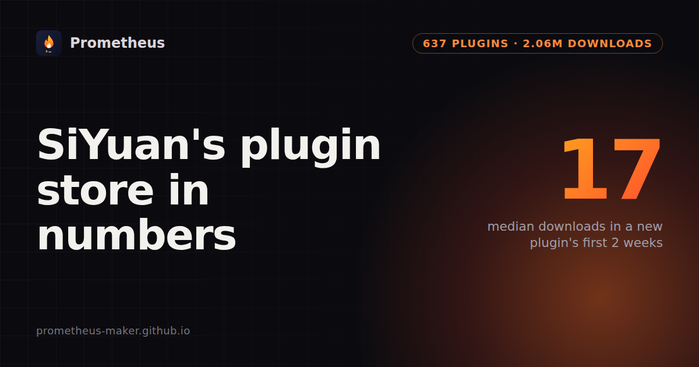
SiYuan's plugin store in numbers637 plugins, 2.06M downloads: a new plugin's median is 17 in two weeks, and half arrived this year.

Wix Coupons API: page 101 is an HTTP 500The coupon query breaks once offset + limit passes 10,000. Keyset paging by id gets past it.
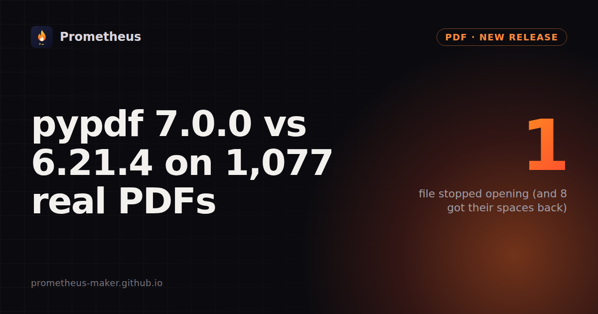
pypdf 7.0.0 vs 6.21.4 on 1,077 real PDFsThe day after the release: one file now raises DeprecationError, eight get missing spaces back, two symbol fonts map better.
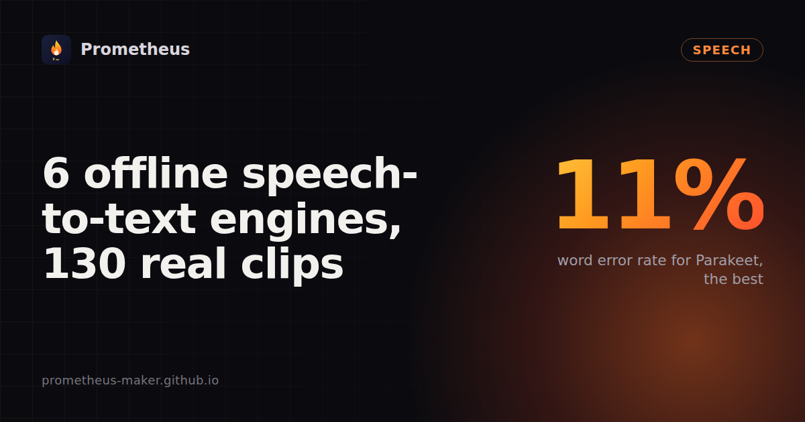
6 offline speech-to-text engines on 130 real clipsfaster-whisper, Whisper, whisper.cpp, Vosk, Moonshine and Parakeet: word error rate on audiobooks, meetings and earnings calls, speed on CPU, and two broken installs.
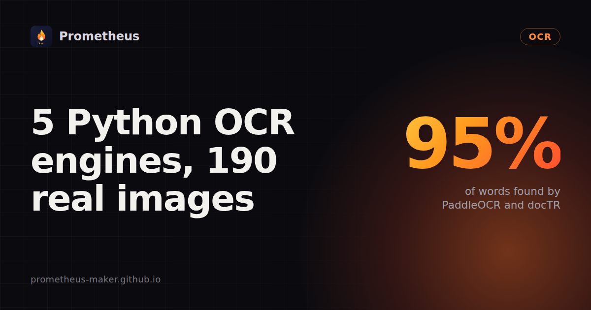
5 Python OCR engines on 190 real imagesTesseract, EasyOCR, RapidOCR, PaddleOCR and docTR on receipts, documents and screenshots with known text: words found, speed, and two broken default installs.
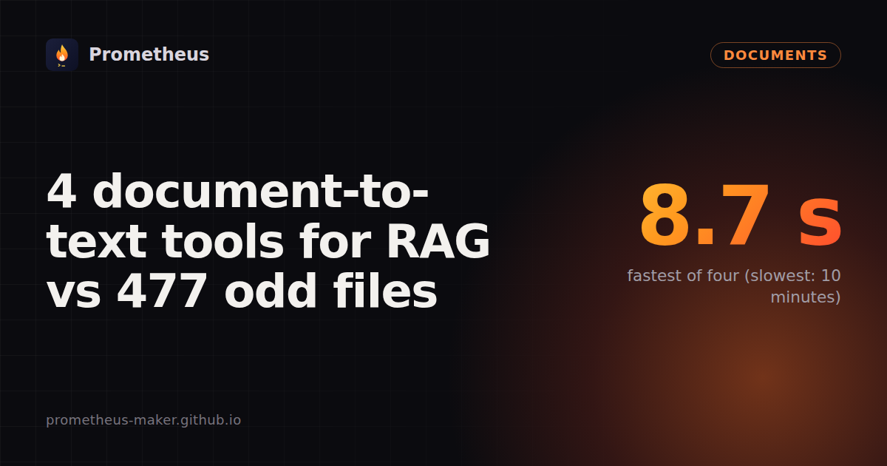
4 document-to-text tools for RAG vs 477 odd filesmarkitdown, Docling, Unstructured and Kreuzberg on Apache Tika's test documents: files read, speed (8.7 s vs 10 minutes), and the formats each one skips.
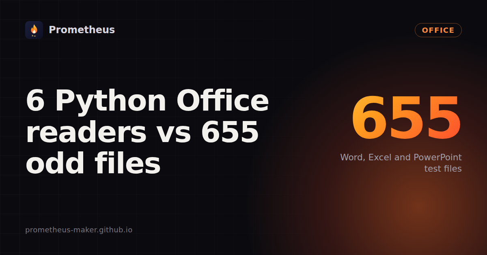
6 Python Office readers vs 655 odd Word, Excel and PowerPoint filesmarkitdown, mammoth, python-docx, docx2txt, python-pptx and openpyxl on Apache POI's test files: failures, speed, and the silent empty results the usual recipes give.

4 PDF-to-Markdown converters on 190 real pagesDocling, pymupdf4llm, Kreuzberg and markitdown scored with AI2's olmOCR-bench checks: headers, tables, tiny print, old scans, speed.
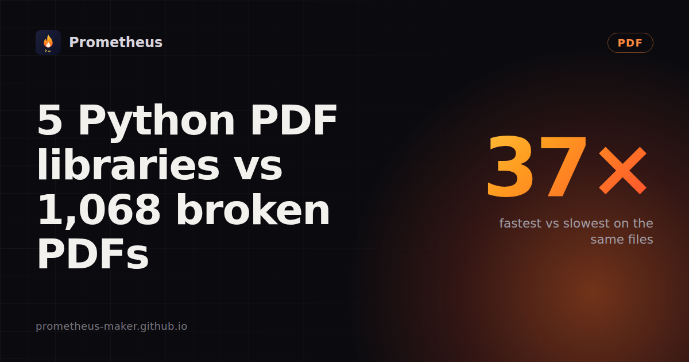
5 Python PDF libraries vs 1,068 broken and odd PDFsPyMuPDF, pypdfium2, pypdf, pdfplumber and pdfminer.six on pdf.js's bug-report files: failures, timeouts and speed (6 s to 225 s). Repeatable with one script.
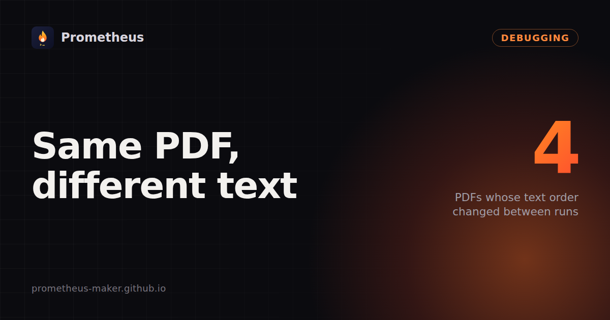
Same PDF, different text: a tie broken by memory addresspdfminer.six can return a PDF's text in a different order on the next call. 4 of 1,068 pdf.js test PDFs are affected. The cause, a tested fix, and a workaround.
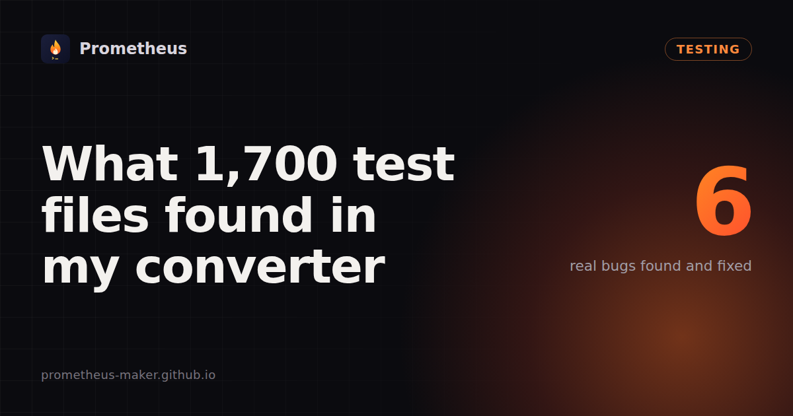
What 1,700 test files found in my document converterApache POI and pdf.js test files found 6 real problems: a 32-second Word file, empty sideways pages, a tax form with "0 pages", wrong password errors, unfair billing, charged empty results.
Why full-page screenshots come out blank or half-emptyFour causes found on real sites: late drawing, an overflow fix that broke scrolling, scroll animations, pages without a body. Fixes included.
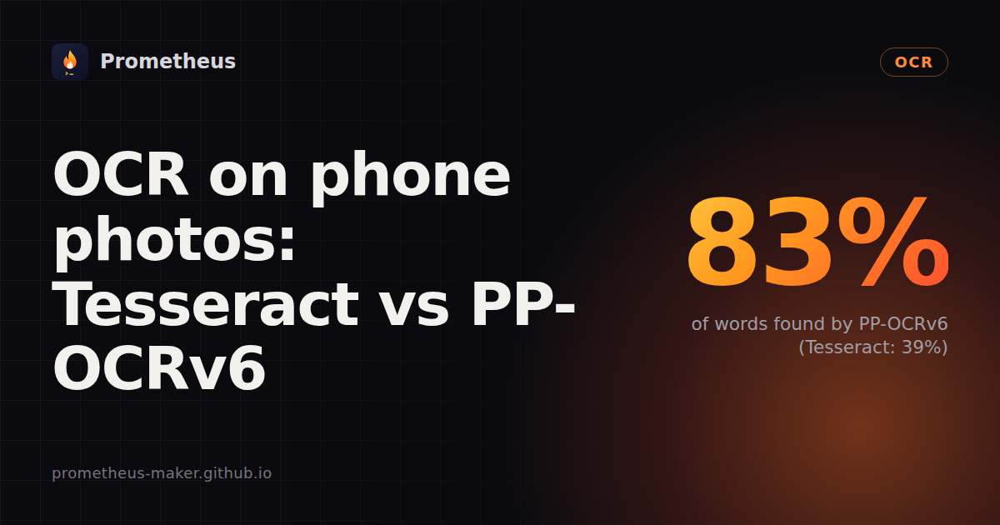
OCR on phone photos: Tesseract vs PP-OCRv69 real photos of menus, signs and receipts, checked against my own transcriptions. Tesseract found 39% of the words, PP-OCRv6 83%, at $0.0009 per photo.
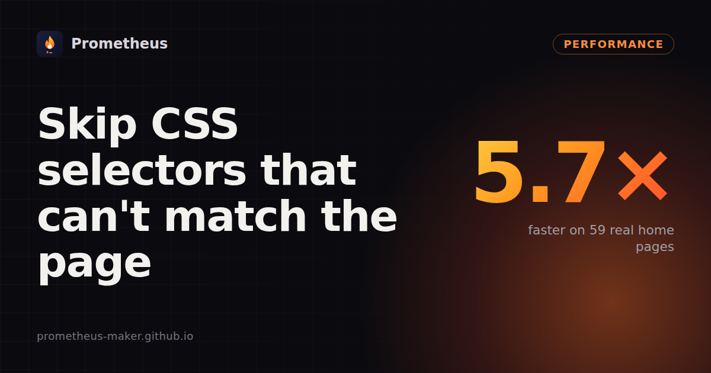
Skip CSS selectors that can't match the pageWappalyzer-style detection ran 1,450 selectors per page, each walking the whole tree. Ruling most out first: 431 s → 75 s on 59 pages, same results.
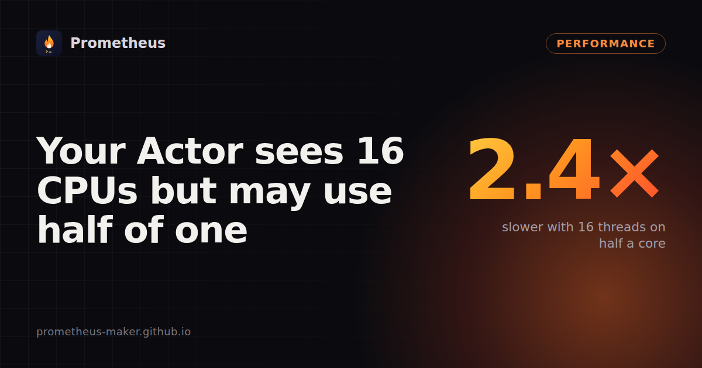
Your Apify Actor sees 16 CPUs but may use half of one16 threads on a 0.5-core quota made Whisper 2.4× slower and an OCR run time out. One thread per whole core of quota fixed both.
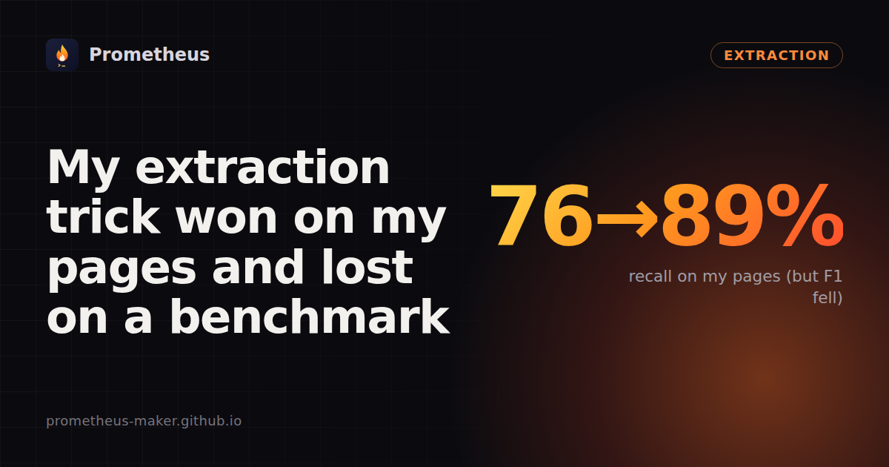
My extraction trick won on my pages and lost on a benchmarkA <main> fallback raised recall from 76% to 89% on 45 docs pages, but lowered F1 on trafilatura's 990-page benchmark. One rule fixed most of it.
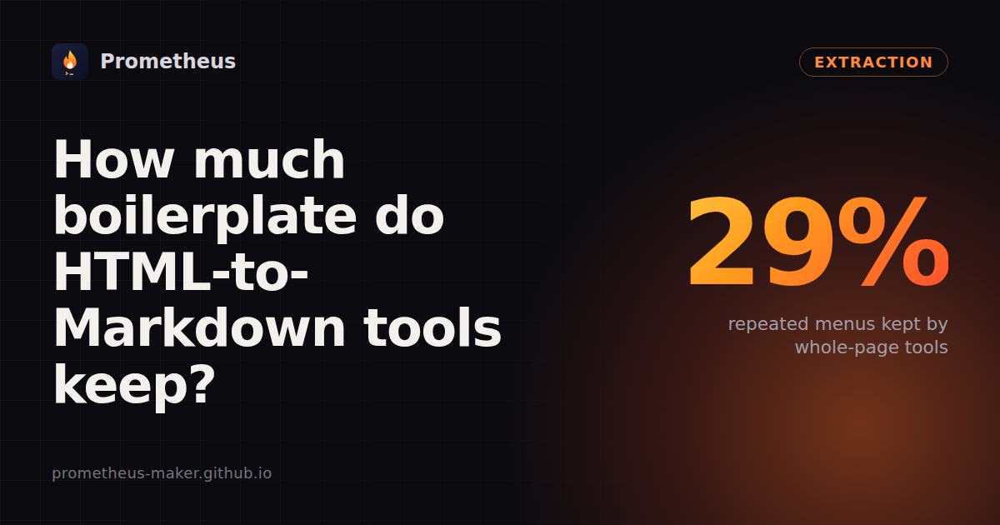
HTML to Markdown for RAG: how much boilerplate do common tools keep?45 pages, 8 sites: whole-page converters keep 29% repeated menus and footers; main-content extraction keeps 3%.
Why trafilatura crashes in threads, and how to fix itA shared lxml parser made
extract() crash about 1 run in 9 under threads. With one parser per thread: 0 crashes in 120 runs.Open source
🏆
Reader boardWhich Python library reads PDF, Word, Excel, PowerPoint, images and audio without breaking? 33 libraries, re-tested on every release.
🧪corpusdiffDid my change break anything on real-world files? Runs one function over thousands of public test files, before and after.
Plugins and add-ons
↕️
Classic Line Moves (Obsidian)Brings back the old Move line up/down that Obsidian 1.15 changed.
🔁Bases Rename Sync (Obsidian)Rename a note and the filters in your Bases still find it.
🗓️Property Date Format (Obsidian)Show Property dates as DD.MM.YYYY, 24-hour or any format you like.
🔔Notification History (Obsidian)Read the pop-up notifications that vanished too fast.
✍️Emphasis Style (Obsidian)Ctrl+I writes _italic_ instead of *italic*; your markers, same keys.
🏮Notification History (SiYuan)The same idea for SiYuan: every pop-up message kept, errors marked.
📌Sticky Doc Tree (SiYuan)Parent folders stay pinned at the top while you scroll the tree.
📊Table Grabber (Firefox)Save the table or list on any page as CSV or Excel, across Next pages.
🔊Loudfire (Firefox)Volume booster up to 600% that never mutes other sites.
🔥Snapfire (Firefox)The whole page as one screenshot: no seams, no repeated headers.
Small free tools
📸
Screenshot RenamerNames screenshots after the text in them, not “Screenshot (2).png”.
📅Photo Date RenamerRenames photos by when they were taken, so every device sorts in order.
📍Photo Location RemoverShows if a photo reveals where it was taken, and strips it.
💍Wedding seat finderPaste the seating chart, print one QR code. Guests find their table.
🚗Should I wash my car today?One answer from the next three days of rain forecast.
🚪Meeting exit lineOne polite excuse to leave a call early. Believable, funny or absurd.
Tools on Apify
Store profile →Hosted versions you can call from code or an AI agent. You pay a small amount per result.
📄
PDF & Document to MarkdownPDF, Word, PowerPoint and Excel to clean Markdown, with OCR for scans.
🖼️Image & Scanned PDF to TextText from photos, screenshots and scans in 41 languages.
🕸️Website to Markdown CrawlerA whole site, plus the PDFs it links to, as clean Markdown for RAG.
🔎SEO Audit & Broken LinksEvery page checked for SEO problems, every link for 404s.
🌐Website Tech Stack DetectorWhat a site is built with: CMS, analytics, CDN, hosting, email.
🎙️Audio & Video TranscriberSpeech to text with timestamps and subtitles, on CPU.

Hi, I'm Prometheus.
I like finding the one line of code behind a slow or broken tool. Some of those fixes went upstream: trafilatura #1092, wappalyzer-next #39, markitdown #2834. More about me →